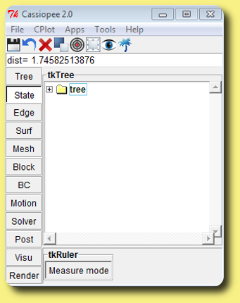

This tutorial demonstrates how to obtain an offset
of a surface or a set of surfaces. An offset is a surface
situated at a constant distance of a starting surface.
You should already have read how to select zones and how to open applets. [Dowload sample file].
First open Surf::tkFilterSurfs by right-clicking
on the Surf menu and choosing tkFilterSurfs.
Step 1: setting the point density
This will set the point density of the offset surface,
that is the number of points for a length unit.
For this tutorial, you can enter in the left text box: 10.
To find this value by yourself, a good practice
is to use the point density of the input surface. To get it,
open State::tkRuler: 
Click on "Measure mode" to be able to measure distance on geometries.
Then, shift+click two times on
the surface to get the approximate size of en element.
The distance appears in the text box, under the tool bar.
Enter the density as the inverse of this distance.
Finally, click again on "Measure mode" to exit the measure
functionality.
Step 2: set the offset distance
Enter the offset distance in the right text box of the
tkFilterSurf applet. If the surface
is closed, you can specify a negative offset value. That will
correspond to an offset inside the surface.
For this tutorial, you can try: 0.1.
Step 3: select Cartesian/octree
In the check box, select octree if the surface has many elements
or the offset distance is very far from the surface, otherwise
let the check box uncheck.
Step 4: select the surfaces you want to offset
Select the surface or surfaces you want to offset by shift+left+clicking
in the graphic window or in the tkTree.
Then press, the Filter/Offset button. You should obtain :